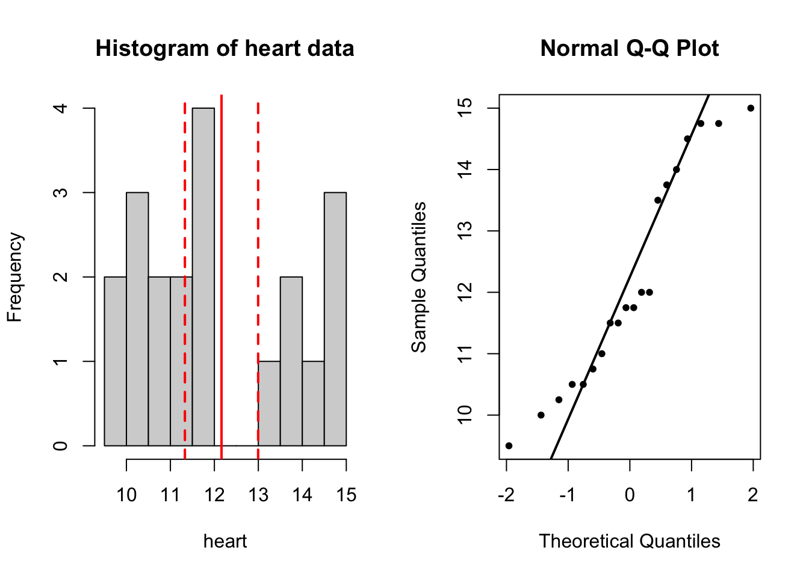
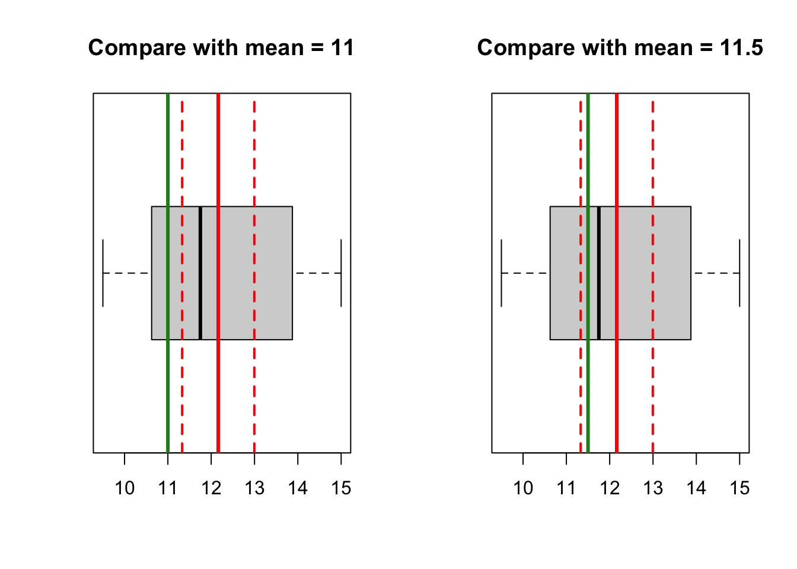
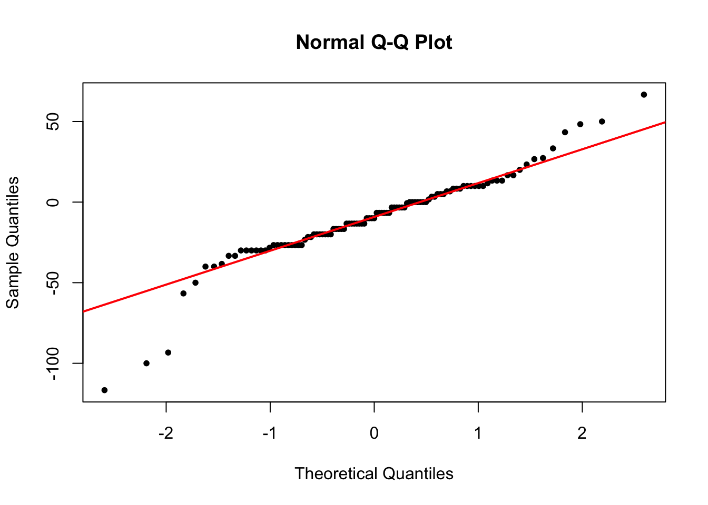
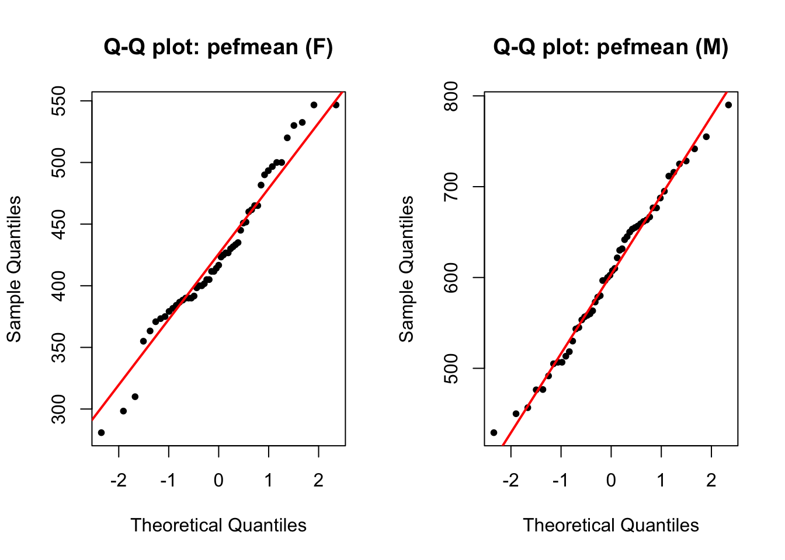

# enter the data
heart <- c(11.5, 14.75, 13.75, 10.5, 14.75,
13.5, 10.75, 9.5, 11.75, 12,
10.5, 11.75, 10, 14.5, 12,
11, 14, 15, 11.5, 10.25)t-test
Compare two continuous variables
Examples (exercises with solution)
Exercise 1 (heart data)
The weight of the hearts of 20 men with age between 25 and 55 years have been evaluated, and is given below (in ounces, 1 ounce = 28g)
11.50 14.75 13.75 10.50 14.75 13.50 10.75 9.50 11.75 12.00
10.50 11.75 10.00 14.50 12.00 11.00 14.00 15.00 11.50 10.251a)
Create a variable in R, and enter the data. Compute the mean weight of the hearts based on the formula; then verify it with R function.
Formula: mean
The mean of data \(X = (x_1, x_2, ... x_n)\), \(\bar{x} = \frac{1}{n}\sum_{i = 1}^N x_i\)
# compute the mean
sum_heart <- 11.5 + 14.75 + 13.75 + 10.5 + 14.75 +
13.5 + 10.75 + 9.5 + 11.75 + 12 +
10.5 + 11.75 + 10 + 14.5 + 12 +
11 + 14 + 15 + 11.5 + 10.25
n <- 20 # length(heart)
sum_heart[1] 243.25sum_heart/20[1] 12.1625# formula: sum(heart)/length(heart)
mean(heart) # 12.162[1] 12.16251b)
Compute the 95% confidence interval for the mean. Verify your computed confidence interval with R function t.test(heart).
Formula: confidence interval for the mean
# standard deviation, 95% confidence interval
# formula (sd): sqrt(1/(n-1) * (sum(xi - xbar)^2))
# translate into format that R can understand:
n <- 20 # length(heart)
sqrt(1/(n-1) * (sum((heart - mean(heart))^2))) # be careful with brackets[1] 1.779405sd(heart) # 1.779[1] 1.779405# 95% CI (quantile from t-distribution)
# formula: CI = xbar +- t(n-1, alpha/2) * sd/sqrt(n)
# translate into format R can understand:
t025 <- qt(p = 0.025, df = n-1) # -2.09
t975 <- qt(p = 0.975, df = n-1) # 2.09
c(t025, t975) # symmetric around 0[1] -2.093024 2.093024# plug in the formula
ci_lower <- mean(heart) - t975 * sd(heart)/sqrt(n)
ci_upper <- mean(heart) + t975 * sd(heart)/sqrt(n)
c(ci_lower, ci_upper)[1] 11.32971 12.99529# verify by doing a one-sample t-test
# by default, it tests whether mean is 0
t.test(heart)
One Sample t-test
data: heart
t = 30.568, df = 19, p-value < 2.2e-16
alternative hypothesis: true mean is not equal to 0
95 percent confidence interval:
11.32971 12.99529
sample estimates:
mean of x
12.1625 1c)
We would like to know whether the mean heart weight is equal to 11 and 11.5.
Before you carry out hypothesis tests, you can gain useful insight by visualization. You can try to use histogram, Q-Q plot and boxplot, and compare the mean heart weight with 11 and 11.5.
What can you conclude?
par(mfrow = c(1, 2))
# histogram
hist(heart, breaks = 10, main = 'Histogram of heart data')
abline(v = mean(heart), col = 'red', lwd = 2)
abline(v = c(ci_lower, ci_upper), col = 'red', lwd = 2,
lty = 'dashed')
# qqplot
qqnorm(heart, pch = 20)
qqline(heart, lwd = 2)
# boxplot
par(mfrow = c(1, 2))
# compare with 11
boxplot(heart, horizontal = T, main = 'Compare with mean = 11')
abline(v = mean(heart), col = 'red', lwd = 3)
abline(v = c(ci_lower, ci_upper), col = 'red', lwd = 2,
lty = 'dashed')
abline(v = 11, col = 'forestgreen', lwd = 3)
# compare with 11.5
boxplot(heart, horizontal = T, main = 'Compare with mean = 11.5')
abline(v = mean(heart), col = 'red', lwd = 3)
abline(v = c(ci_lower, ci_upper), col = 'red', lwd = 2,
lty = 'dashed')
abline(v = 11.5, col = 'forestgreen', lwd = 3)
1d)
Formulate hypothesis tests. Decide whether you need one-sided or two-sided test, and state your conclusion (with p-values and confidence intervals).
# H0: mu = 11; H1: mu != 11
t.test(heart, mu = 11, conf.level = 0.95)
One Sample t-test
data: heart
t = 2.9217, df = 19, p-value = 0.008751
alternative hypothesis: true mean is not equal to 11
95 percent confidence interval:
11.32971 12.99529
sample estimates:
mean of x
12.1625 # H0: mu = 11.5; H1: mu != 11.5
t.test(heart, mu = 11.5, conf.level = 0.95)
One Sample t-test
data: heart
t = 1.665, df = 19, p-value = 0.1123
alternative hypothesis: true mean is not equal to 11.5
95 percent confidence interval:
11.32971 12.99529
sample estimates:
mean of x
12.1625 Exercise 2 (lung function)
Lung function has been measured on 106 medical students. Peak expiratory flow rate (PEF, measured in liters per minute) was measured three times in a sittinng position, and three times in a standing position.
The variables are
- Age (years)
- Gender (1 is female, 2 is male)
- Height (cm)
- Weight (kg)
- PEF measured three times in a sitting position (pefsit1, pefsit2, pefsit3)
- PEF measured three times in a standing position (pefsta1, pefsta2, pefsta3)
- Mean of the three measurements made in a sitting position (pefsitm)
- Mean of the three measurements made in a standing position (pefstam)
- Mean of all six PEF values (pefmean)
Lung function data
This is the same dataset we have used in EDA (part I) from two days ago. You can use either PEFH98-english.dta, or PEFH98-english.csv data.
If you forgot how to load the data, you can refresh your knowledge by reading these notes (Example 2)
2a)
Open PEFH98-english.dta (or PEFH98-english.csv) into R.
Pay attention to how gender is coded. We might have to modify it.
Determine the mean height for females. Calculate the standard deviation and a 95% confidence interval. How would you comment on this result?
Do the same for males.
lung_data <- haven::read_dta('data/PEFH98-english.dta')
# recode gender: female, male
lung_data$gender <- factor(lung_data$gender,
levels = c('1','2'),
labels = c('female','male'))
# head(lung_data)
# we can focus on height and gender variable only
head(lung_data[, c('height', 'gender')], 10)# A tibble: 10 × 2
height gender
<dbl> <fct>
1 165 female
2 185 male
3 178 male
4 179 male
5 196 male
6 189 male
7 173 male
8 196 male
9 173 female
10 173 femaleNow we need to separate the height data for based on gender. First, we do it for gender == 'female'.
# for convenience, we create a variable names 'gender'
gender <- lung_data$gender
# height for female
height_f <- lung_data$height[gender == 'female']You should always check whether your newly created variable is correct: for example, you can compare the first several values of height_f with the original data, to see if it is really only selecting height for females.
Another useful thing to do is to check how many data poinnts have been selected.
# check the first few values, is it only selecting female heights?
head(height_f)[1] 165 173 173 169 170 172# number of females
nf <- length(height_f) # 54
nf[1] 54Now we can compute the mean and confidence interval on the newly created variable, height_f.
mean(height_f) # 169.57[1] 169.5741sd(height_f) # 5.69[1] 5.692106# se_f <- sd(height_f)/sqrt(54) 0.774
# quantile for t distribution: pay attention to df!
t975 <- qt(p = 0.975, df = nf-1) # 2.005
# 95% CI
ci_upper_f <- mean(height_f) + t975 * sd(height_f)/sqrt(nf) # 171.1277
ci_lower_f <- mean(height_f) - t975 * sd(height_f)/sqrt(nf) # 168.0204
c(ci_lower_f, ci_upper_f)[1] 168.0204 171.1277# double check by running a t.test
t.test(height_f)
One Sample t-test
data: height_f
t = 218.92, df = 53, p-value < 2.2e-16
alternative hypothesis: true mean is not equal to 0
95 percent confidence interval:
168.0204 171.1277
sample estimates:
mean of x
169.5741 For gender == 'male', we can do the same thing. Pay attention to the different degrees of freedom, because the sample size has changed.
# height for male
height_m <- lung_data$height[gender == 'male']
# number of males
nm <- length(height_m) # 52
mean(height_m) # 181.87[1] 181.8654sd(height_m) # 5.67[1] 5.667343# se_m <- sd(height_m)/sqrt(52) # 0.786
# find quantile for males (pay attention to df)
t975 <- qt(p = 0.975, df = nm-1) # 2.007
# 95% CI
ci_upper_m <- mean(height_m) + t975 * sd(height_m)/sqrt(nm) # 183.44
ci_lower_m <- mean(height_m) - t975 * sd(height_m)/sqrt(nm) # 180.28
c(ci_lower_m, ci_upper_m)[1] 180.2876 183.4432# verify by t.test
t.test(height_m)
One Sample t-test
data: height_m
t = 231.4, df = 51, p-value < 2.2e-16
alternative hypothesis: true mean is not equal to 0
95 percent confidence interval:
180.2876 183.4432
sample estimates:
mean of x
181.8654 2b)
Assume that the average height for female students a few years ago was 167 cm. Does the height in the present material differ significantly?
Formulate a null hypothesis, calculate a test statistic and p-value.
# use t.test command
t.test(height_f, mu = 167)
One Sample t-test
data: height_f
t = 3.3231, df = 53, p-value = 0.001619
alternative hypothesis: true mean is not equal to 167
95 percent confidence interval:
168.0204 171.1277
sample estimates:
mean of x
169.5741 # alternatively,
# calculate by hand
t_stat <- (mean(height_f) - 167)/(sd(height_f)/sqrt(nf))
t_stat # 3.323[1] 3.323112# compare this with t distribution with nf-1 degrees of freedom
pval_twosided <- pt(q = t_stat, df = nf-1, lower.tail = F)*2
pval_twosided[1] 0.0016187512c)
Do the values pefsit1 and pefsit2 differ significantly? Calculate a test statistic, the mean difference, and the 95% confidence interval, and formulate a conclusion. Interpret the results.
pefsit1 <- lung_data$pefsit1
pefsit2 <- lung_data$pefsit2
# hist(pefsit1)
# hist(pefsit2)
t.test(pefsit1, pefsit2, paired = T)
Paired t-test
data: pefsit1 and pefsit2
t = -1.5781, df = 104, p-value = 0.1176
alternative hypothesis: true mean difference is not equal to 0
95 percent confidence interval:
-9.929056 1.129056
sample estimates:
mean difference
-4.4 # alternatively, you can test whether the difference is equal to 0
diff_sit1_sit2 <- pefsit1 - pefsit2
t.test(diff_sit1_sit2, mu = 0)
One Sample t-test
data: diff_sit1_sit2
t = -1.5781, df = 104, p-value = 0.1176
alternative hypothesis: true mean is not equal to 0
95 percent confidence interval:
-9.929056 1.129056
sample estimates:
mean of x
-4.4 2d)
Carry out a t-test to decide whether pefsitm annd pefstam are significantly different.
# compare pefsitm, pefstam (paired t-test)
pefsitm <- lung_data$pefsitm
pefstam <- lung_data$pefstam
t.test(pefsitm, pefstam, paired = T)
Paired t-test
data: pefsitm and pefstam
t = -3.6974, df = 104, p-value = 0.0003498
alternative hypothesis: true mean difference is not equal to 0
95 percent confidence interval:
-14.656161 -4.423204
sample estimates:
mean difference
-9.539683 2e)
Are the assumptions of the previous test reasonably fulfilled?
You should check that the difference between pefsitm and pefstam is normally distributed.
Expand to read hint
You can create a new variable called difference by difference <- pefsitm - pefstam, then check the normality of difference by looking at histogram (hist(difference)), or QQ plot (qnorm difference)
# create a variable
diff_sitm_stam <- pefsitm - pefstam
qqnorm(diff_sitm_stam, pch = 20)
qqline(diff_sitm_stam, col = 'red', lwd = 2)
2f)
Carry out a t-test to evaluate whether pefmean is signinficantly different for men and women.
Interpret the results, and formulate a conclusion including p-value and confidence interval.
# this is independent two samples t-test
# we need two variables: pefmean for men, pefmean for women
pefmean_f <- lung_data$pefmean[gender == 'female']
pefmean_m <- lung_data$pefmean[gender == 'male']
# visually spot whether there is a difference
# NOTE: there is a NA in pefmean_f
par(mfrow = c(1, 2))
hist(pefmean_f, main = 'pefmean (F)')
abline(v = mean(pefmean_f, na.rm = T), col = 'red', lwd = 2)
hist(pefmean_m, main = 'pefmean (M)')
abline(v = mean(pefmean_m), col = 'red', lwd = 2)
# two sample t-test
t.test(pefmean_f, pefmean_m, paired = F)
Welch Two Sample t-test
data: pefmean_f and pefmean_m
t = -12.425, df = 90.28, p-value < 2.2e-16
alternative hypothesis: true difference in means is not equal to 0
95 percent confidence interval:
-207.6366 -150.3941
sample estimates:
mean of x mean of y
425.2987 604.3141 2g)
Are the assumptions fulfilled in the previous test (pefmean vs gender)?
par(mfrow = c(1, 2))
qqnorm(pefmean_f, pch = 20, main = 'Q-Q plot: pefmean (F)')
qqline(pefmean_f, col = 'red', lwd = 2)
qqnorm(pefmean_m, pch = 20, main = 'Q-Q plot: pefmean (M)')
qqline(pefmean_m, col = 'red', lwd = 2)